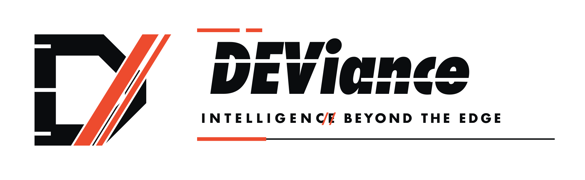

01
NOW PLAYING
Live from the repos — real language, real lines, real commits. Auto-sorted by last push; the flame means it moved this week. These cards refresh themselves.



We prototype machines that think in code. Ideas ship raw, on purpose — half of them never reach a finish line, and that is the point. No roadmap. No pitch. The repos are the pitch.
Live from the repos — real language, real lines, real commits. Auto-sorted by last push; the flame means it moved this week. These cards refresh themselves.
Papers, loop engines, design compilers, semantic instruments. Every repo opens with an honest status: what works, what doesn't, where it stopped. MIT-licensed and stamped. Take one and run.
Structural truth for coding agents. Rust · MIT · the flagship.
AI that argues back. Multi-agent decisions with a devil's advocate.
Not a design system — the compiler that generates them.
Continuity protocol for long human+agent sessions.
The AI access you already have, behind one local surface.
Twelve procedures my agents carry — for Claude Code and Codex. They survived daily use; one ships with its own blind A/B evidence. Get the pack →


Proof-grown. Green without proof is noise.
Pre-register the gates before any data. Interpretation locked before measurement.
→Isolated lab. Contract battery born red. No design theater.
→Adversarial checks, independent skeptics, a real oracle.
→Honest status on top: what works, what doesn't, where it stopped.
→MIT. Take one and run. Nobody builds anything alone.
Before agents, consoles.
Some of those records went platinum. Not the point — the point is compression, headroom, what survives the master.
The lab is open. Auto-sorted by last push; the flame means it moved this week.